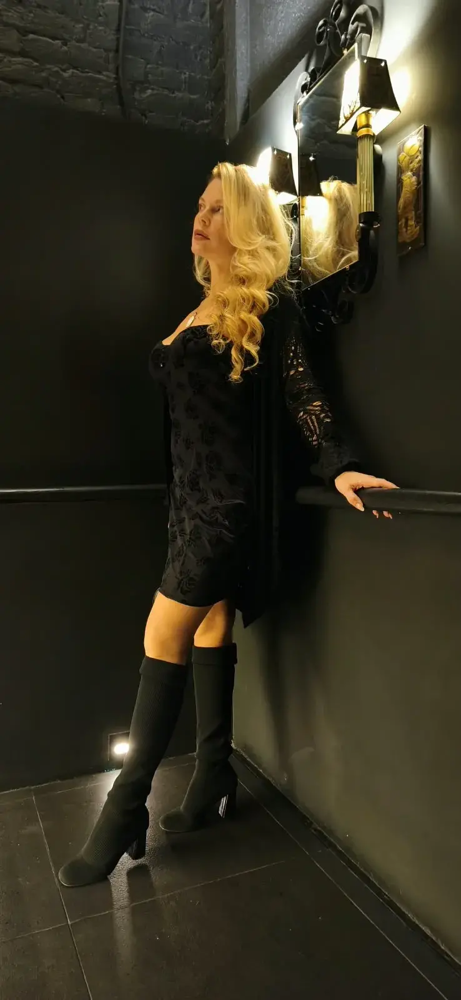
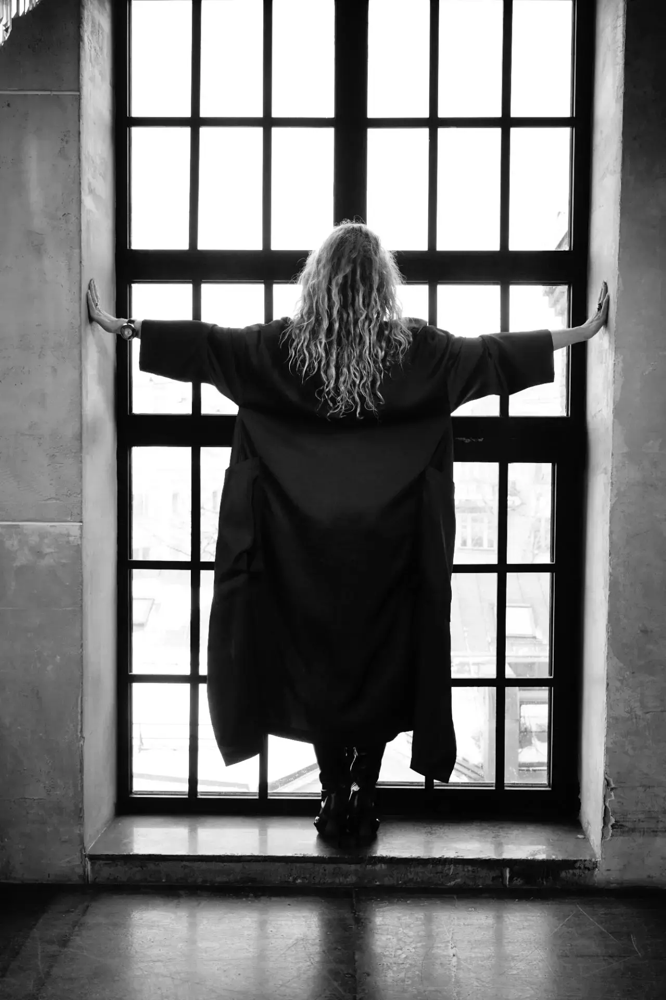

ЕВА · ХУДОЖНИЦА
Эмоциональный импрессионизм — цвет, фактура и живое движение краски.
СМОТРЕТЬ КОЛЛЕКЦИЮ ↓
01 — ОБ АВТОРЕ

Ева — художница, для которой живопись становится способом говорить о чувствах без слов.
Вдохновение она находит в природе, её переменчивом свете, движении и оттенках. В работах соединяются эмоциональность цвета, выразительная фактура и свободная пластика мазка. Каждая картина предлагает зрителю не готовый ответ, а собственное переживание и пространство для личных ассоциаций.
В центре её художественного подхода — красота момента, внутренний свет и эмоции, которые остаются с человеком.
02 — ТЕХНИКА И МАТЕРИАЛЫ
Авторская техника Евы — эмоциональный импрессионизм.
Это живопись, в которой главное — не буквальное воспроизведение реальности, а передача впечатления, настроения и внутреннего состояния через цвет и фактуру.
Мастихин помогает создавать рельефные мазки, плотные слои и выразительный ритм поверхности. Цветовые сочетания, контрасты и направление движения краски складываются в живую композицию, которую хочется рассматривать вблизи и издалека.
В работах используются разные живописные материалы и приёмы — в соответствии с замыслом каждой картины. Точные материалы и размеры указаны в описании конкретной работы.